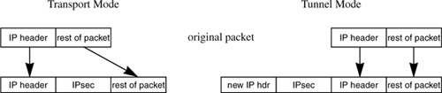
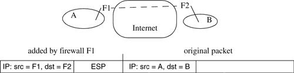
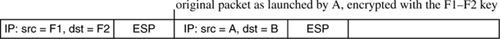

Networking Security Networking Security Networking Security Security Networking Security Networking Security Networking Charlie Kaufman Radia Perlman Mike Speciner Prentice Hall Network Security: Private Communication in a Public World, Second Edition Networking Security Networking Security Networking Security Security Networking Security Networking Security Networking Charlie Kaufman Radia Perlman Mike Speciner Prentice Hall Network Security: Private Communication in a Public World, Second Edition
17.1. Overview of IPsec
The part of IPsec that we cover in this chapter assumes that two nodes already have a shared session key, which might have been configured manually, or established through IKE.
Since Bob might be receiving IPsec-protected packets from many sources, maybe even different processes using the same source IP address, there has to be a way for Bob to know which cryptographic key and which algorithms to use to process the packet. This is done by inserting an IPsec header (AH and/or ESP) into the IP packet which tells Bob to which security association the packet belongs (see §17.1.1 Security Associations). IPsec works with IPv4 or with IPv6.
17.1.1. Security Associations
An IPsec security association (SA) is a cryptographically protected connection. Associated with each end of the SA is a cryptographic key and other information such as the identity of the other end, the sequence number currently being used, and the cryptographic services being used (e.g., integrity only, or encryption + integrity, and which cryptographic algorithms should be used). The SA is considered unidirectional, so a conversation between Alice and Bob will consist of two SAs, one in each direction.
The IPsec header includes a field known as the SPI (SECURITY PARAMETER INDEX) which identifies the security association, allowing Alice to look up the necessary information (such as the cryptographic key) in her SA database. The SPI value is chosen by the destination (Bob), so it would seem as though the SPI alone should allow Bob to know the SA, since Bob can ensure that the SPI is unique with respect to all the sources that Bob has SAs with. But it is possible for Bob to also be receiving multicast data, in which case Bob would not have chosen the SPI, and it might be equal to one that Bob already assigned. Therefore the SA is defined by both the SPI and the destination address. (The destination address of a packet received by Bob will be Bob for unicast, or a group address if it's multicast.) Furthermore, IPsec allows the same SPI values to be assigned to different SAs if one SA is using AH and one is using ESP, so the SA is defined by the triple <SPI, destination address, flag for whether it's AH or ESP>.
17.1.2. Security Association Database
A system implementing IPsec keeps a security association database. When transmitting to IP destination X, the transmitter looks up X in the security association database, and that entry will tell it how to transmit to X, i.e., it will provide the SPI, the key, the algorithms, the sequence number, etc. When receiving an IP packet, the SPI of the received packet is used to find the entry in the security association database that will tell the receiver which key, sequence number, etc., to use to process the packet.
17.1.3. Security Policy Database
Just as firewalls are configured with tables telling them what type of traffic to allow based on information such as the IP header source and destination addresses and TCP ports, IPsec is assumed to have access to a similar database specifying which types of packets should be dropped completely, which should be forwarded or accepted without IPsec protection, and which should be protected by IPsec, and if protected, whether they should be encrypted and/or integrity-protected. Decisions could, in theory, be based on any fields in the packet, e.g., source IP address, destination IP address, protocol type in the IP header, and layer 4 (TCP or UDP) ports.
17.1.4. AH and ESP
AH (Authentication Header, defined in RFC 2402) and ESP (Encapsulating Security Payload, defined in RFC 2406) are the two types of IPsec headers. AH provides integrity protection only. ESP provides encryption and/or integrity protection.
Given that ESP optionally provides integrity protection (in addition to optional encryption), it's natural to wonder why AH is needed. In fact many people argue (and we concur) that AH is not necessary. The integrity protection provided by ESP and AH are not identical, however. Both provide integrity protection of everything beyond the IP header, but AH provides integrity protection for some of the fields inside the IP header as well. See §17.1.6 Why Protect the IP Header?. AH can't protect all of the fields, because some of them are intended to be modified by routers (see §17.3.1 Mutable, Immutable).
There is one feature that AH provides that ESP does not. Firewalls and routers sometimes look at fields such as layer 4 ports in order to do packet filtering, content screening, or differential queuing. If everything beyond the header is encrypted (as it would be with ESP, if ESP is encrypting), then firewalls and routers are not able to look at those fields. One could use ESP for integrity only, but it would be impossible for a firewall or router to know whether an ESP-protected packet was encrypted or not. The source and destination knowÂit's either manually configured into the SA or negotiated through IKE. But there's nothing in the packet header that tells a router or firewall whether a packet is encrypted.
This "feature" of having routers and firewalls look at the TCP ports can only be used with unencrypted IP traffic, and many security advocates argue that IPsec should always be encrypting the traffic. Fields such as TCP ports should perhaps be hidden to avoid divulging information such as which applications are running. Firewalls base decisions on the port fields, but a malicious user can disguise any traffic to fit the firewall's policy database (e.g., if the firewall allows HTTP, then run all protocols on top of HTTP).
17.1.5. Tunnel, Transport Mode
The IPsec specification talks about two "modes" of applying IPsec protection to a packet. Transport mode refers to adding the IPsec information between the IP header and the remainder of the packet. Tunnel mode refers to keeping the original IP packet intact and adding a new IP header and IPsec information (ESP or AH) outside.

Transport mode is most logical when IPsec is being applied end-to-end. A common use of tunnel mode is firewall to firewall, or endnode to firewall, where the data is only protected along part of the path between the endpoints. Suppose two firewalls establish an encrypted tunnel to each other across the Internet (see Figure 17-2). They treat the tunnel as if it is an ordinary, trusted link. In order to forward packets across that link, F1 adds an IP header with destination=F2. When A launches an IP packet to destination B, it will have, in the IP header, source=A and destination=B.

When F1 forwards the packet to F2 across the encrypted tunnel, it will use IPsec tunnel mode. F1 will not modify the inner header, other than doing what any router would do when forwarding a packet, such as decrementing the hop count. The outer IP header added by F1 will have source=F1 and destination=F2. The inner header will be unmodified by the routers along the path between F1 and F2. Those routers will only look at the outer IP header.
Transport mode is not strictly necessary, since tunnel mode could be used instead. Tunnel mode just uses more header space since there will be two IP headers.
The same packet might have multiple layers of IPsec (ESP and/or AH) headers, and might be multiply-encrypted (see Figure 17-3). Suppose A and B are talking with an encrypted end-to-end connection. Their packets will contain an ESP header. When F1 forwards it across the tunnel to F2, F1 takes the entire packet (including the IP+ESP header) and adds its own IP + ESP header. F1 encrypts the entire packet it received, including the IP header, with the key that F1 shares with F2.

Tunnel mode is essential between firewalls in order to preserve the original source and destination addresses; and as we said earlier, tunnel mode can be used instead of transport mode at the expense of adding a new IP header. Given that IPsec is too complex, many have argued that getting rid of transport mode would be one way of simplifying IPsec. But transport mode is such a small piece of the complexity of IPsec that we don't feel it's worth worrying about. Far more useful would be to get rid of AH and most of IKE.
17.1.6. Why Protect the IP Header?
AH advocates claim AH is needed because it protects the IP header. It is unclear why it is necessary to protect the IP header. If it were necessary, this could be provided by ESP in tunnel mode. Intermediate routers cannot enforce AH's integrity protection, because they would not know the session key for the Alice-Bob security association. So AH can at best be used by Bob to check that the IP header was received as launched by Alice.
|